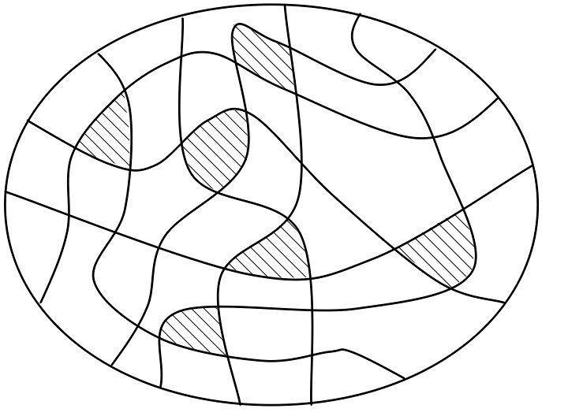

|  |
Java
| |||||||||||||||||||
SummaryThis open source library allows for the creation and manipulation of oriented matroids with high quality code; extensive support for pseudolines, and pseudolines diagrams is provided. It principally covers the cryptomorphic representations of oriented matroids, allowing seamless conversion between them. Please contact me if you are using this library. Pseudoline DiagramsThe code comes with several examples built-in. We include pseudoline diagrams of most of them here. A good place to start is this one, the first example from the TODO Oriented Matroid book. That page explains how to read the diagrams, in particular, to understand what 'oriented' means in terms of these diagrams, and the meaning of the origin in this pictures. Each picture is a projection of a pseudoline arrangement in the projective plane onto the Euclidean plane, with the line at infinity turned into an oval around the picture. If you are interested, there are a further, somewhat boring, five projections of the chapter 1 arrangement. The other examples are more interesting, and are as follows:
Developer DocumentationThe on-line javadoc is the guide to the API Sourceforge LinksDifficulties in Being StraightThe primary goal is to help me on my long-term project concerning pseudoline stretching. The fundamental approach is essentially the same as in my technical report from 2000, significantly updated with an oriented matroid viewpoint, as described in too much length in A New Proof of Pappus's Theorem:
With release 0.2 of July 2013, the prerequisite work on oriented matroids is sufficiently complete: the next release will include some of the implementation of this realizability algorithm (for rank 3 oriented matroids) AcknowledgementMany thanks to YourKit Java Profiler, which we whole-heartedly recommend. |